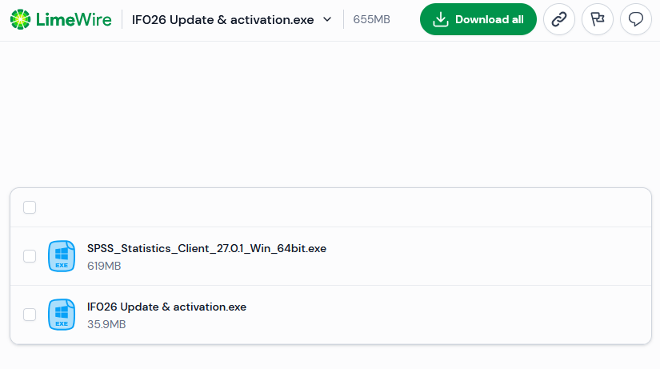
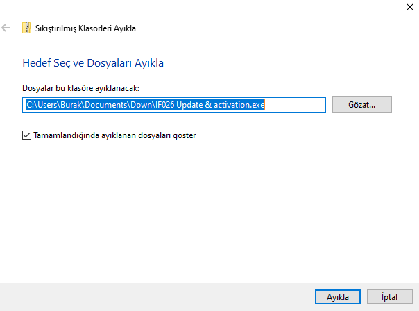
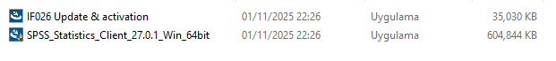
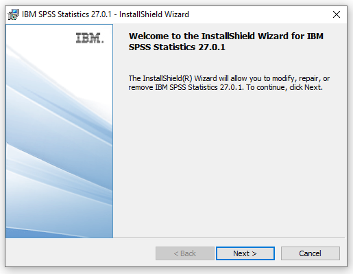
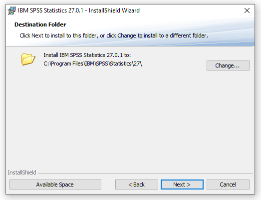
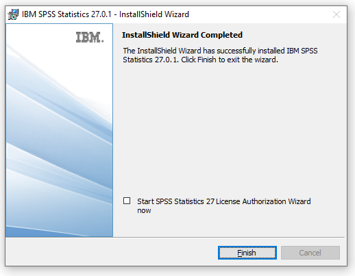
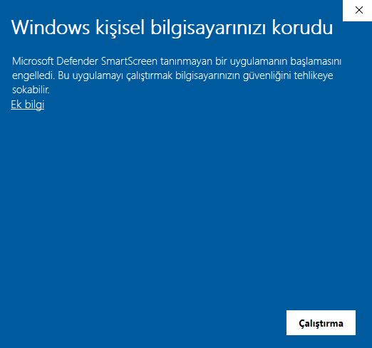
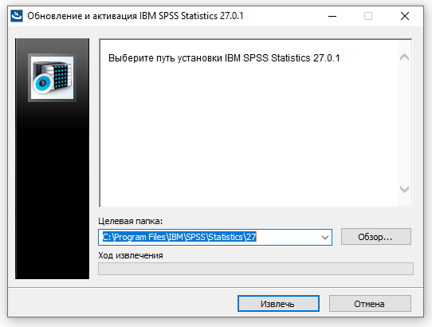

1. İndirme
Download all butonu ile SPSS 27 için gerekli olan iki dosyayı indirebilirsiniz.
2. Dosya Çıkarma

Dosya indirildikten sonra İndirilenler klasöründe yer alan dosyayı sağ tıklayarak Tümünü Ayıkla butonu ile çıkartabilirsiniz.

Açılan pencerede ayıkla butonuna basarak sıkıştırılmış dosyadaki iki dosyayı klasöre çıkartabilirsiniz.
3. Kurulum
Kurulum aşaması için "SPSS_Statistics_Client..." adlı dosyayı çalıştırın ve yönetici izni verin.

Next ve tekrardan Next butonuna basarak ilerleyiniz.

Kurulum dosyasının yerini değiştirmeden Next ve daha sonra Install butonuna basarak ilerleyiniz ve kurulumu tamamlayınız.

Yukarıdaki son adımda varsayılan şekilde seçilmiş olan tiki kaldırınız ve Finish butonuna basınız.
4. Lisanslama
Üçüncü adım tamamlandıktan sonra lisanslama adımı için daha önce çıkarılan "IF026 Update & activation" dosyasını çalıştırınız.

Ortaya çıkan uyarıyı aşmak ve lisanslamaya devam etmek için Ek bilgi butonuna basınız ve Yine de çalıştır ile devam ediniz.

Soldaki butona basarak devam ediniz ve bitmesini bekleyiniz. Bu noktadan sonra masaüstündeki SPSS'i masaüstündeki kısayol ile kullanabilirsiniz.